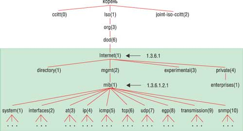
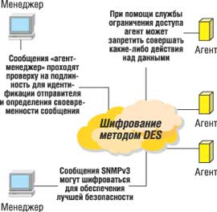
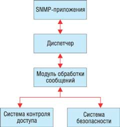

Алексей Бондаренко
bondarenko@smartec.ru
Современный бизнес не существует без компьютерных и телекоммуникационных технологий. Информационная инфраструктура большинства компаний представляет собой сложную разнородную сеть, в состав которой входит разнообразное программное и аппаратное обеспечение многих производителей. При этом каждый производитель телекоммуникационного оборудования стремится продвигать собственные стандарты.
Основная задача при управлении компьютерными сетями - автоматизировать процесс конфигурирования и мониторинга параметров сети. Существует множество моделей и систем сетевого управления. Попробуем разобраться в этом разнообразии.
Обычно система сетевого управления представляет собой прикладную программу высокого уровня, использующую один из стандартных протоколов сетевого управления - Simple Network Management Protocol (SNMP) или Common Management Information Protocol (CMIP). CMIP применяется в телекоммуникационных сетях, где востребованы все доступные возможности управления сетями, в то время как SNMP используется в локальных и корпоративных сетях, где достаточно минимума данных.
Основные задачи системы управления таковы:
- обеспечение высокой производительности сети;
- обеспечение удобной среды для управления сетевыми ресурсами;
- сбор информации о состоянии всех сетевых устройств;
- анализ и хранение информации о состоянии всех сетевых устройств;
- прогнозирование сбоев в работе сети.
Протоколы управления сетями
Итак, системы управления сетями используют протокол SNMP или CMIP. В систему, основанную на протоколе SNMP, входят:
- протокол взаимодействия агента и менеджера;
- язык описания моделей MIB и сообщений SNMP - язык абстрактной синтаксической нотации ASN.1;
- ограниченное количество моделей MIB (MIB-I, MIB-II, RMON, …).
Изначально протокол SNMP и база SNMP MIB разрабатывались как временное решение для управления маршрутизаторами Интернета. Но решение оказалось настолько простым, эффективным и гибким, что и по сей день оно повсеместно применяется при управлении сетевым оборудованием.
С помощью протокола SNMP можно оценить производительность сетевых устройств, количество свободных ресурсов, загруженность, а также определить множество других полезных характеристик, необходимых для управления сетевыми устройствами. SNMP - это протокол типа "запрос-ответ" (т. е. на каждый запрос менеджера должен быть передан ответ агента).
Протокол SNMP имеет не слишком большой набор команд. Команда Get-request применяется менеджером для получения от агента значения объекта по имени. Команда GetNext-request применяется менеджером, чтобы получить значение следующего объекта при последовательном обходе MIB. При помощи команды Get-response агент SNMP передает менеджеру результаты вышеперечисленных команд. Команда Set устанавливает значения объекта, а команда Trap сообщает менеджеру о возникновении какой-либо нестандартной ситуации. Кроме того, в SNMP версии 2 добавлена команда GetBulk, при помощи которой менеджер может получить несколько значений переменных за один запрос.
Сама структура MIB следует стандартизованному описанию (рис. 1), которого придерживаются все производители сетевого оборудования. Для специфических параметров сетевого оборудования используются специальные частные (private) поддеревья.
|  |
| Рис. 1. Структура MIB.
|
В протоколе SNMP присутствует агент, который обрабатывает полученные из MIB данные и передает их менеджеру на управляющую станцию сети. В результате управляющие станции обладают всей информацией, которая им необходима из MIB.
Как уже упоминалось выше, главное достоинство протокола SNMP заключается в его простоте и в том, что его поддерживают почти все производители сетевого оборудования. Однако из-за своей простоты протокол SNMP обладает и некоторыми недостатками: во-первых, при опросе сеть оказывается загружена сервисной информацией, что ухудшает пропускную способность сети в целом; во-вторых, данные при передаче практически не шифруются. В-третьих, поскольку в качестве транспортного используется протокол низкого уровня (UDP), нет возможности подтвердить доставку информации.
В 1993 г. была предложена версия протокола SNMPv2, в которой были исправлены некоторые недостатки SNMPv1. Вторая версия позволила значительно улучшить производительность протокола, повысить безопасность; в ней появились некоторые новые типы данных и стали поддерживаться операции типа "менеджер-менеджеров". Но, несмотря на все улучшения, в ряде случаев сервисный трафик все равно перегружал сеть и мешал ее работе по прямому назначению, а функции аутентификации пользователей отсутствовали.
В декабре 1997 г., с выходом SNMPv3, пользователям стали доступны новые службы (рис. 2), такие, как ограничение доступа, защита данных и аутентификация пользователя (RFC 2271-2275). При создании новой версии разработчики SNMPv3 руководствовались следующими принципами:
- увеличение безопасности протокола (особенно для операций типа SET);
- протокол должен иметь возможность дальнейшего развития и расширения;
- протокол должен остаться простым и понятным;
- настройки параметров безопасности SNMPv3 должны быть максимально простыми;
- наследование архитектуры от более ранних версий SNMP (v1, v2p, v2c, v2u) для поддержки действующего сетевого оборудования.
|  | Рис. 2. Особенности протокола SNMPv3.
|
Как работает SNMPv3
Как в более ранних версиях, в SNMP третьей версии агенты находятся на маршрутизаторах, а менеджеры занимаются их опросом. У агентов и менеджеров теперь есть ядро, которое выполняет четыре основные функции: контроль доступа, обработка сообщений, функции безопасности и диспетчеризация (рис. 3). Диспетчер обрабатывает все входящие и исходящие сообщения и определяет действующую версию SNMP. Затем сообщения отсылаются соответствующему модулю обработки сообщений, который отправляет сообщение системе контроля доступа или системе безопасности. В свою очередь, модуль обработки сообщений отсылает сообщения обратно диспетчеру, который передает их приложениям SNMP.
|  | Рис. 3. Алгоритм работы SNMPv3.
|
SNMPv3 привлекает пользователей прежде всего своей безопасностью. Разработчики предусмотрели в нем три уровня безопасности:
- noAuthNoPriv - пароли передаются в открытом виде, конфиденциальность данных отсутствует;
- authNoPriv - аутентификация без конфиденциальности (большинство пользователей использует именно этот уровень, так как уровень защищенности в нем уже достаточно высок, а сетевые устройства не перегружаются шифрованием данных);
- authPriv - аутентификация и шифрование. Максимальный уровень защищенности.
Сравнение SNMP и CMIP
При помощи протокола SNMP можно реализовать как простые, так и сложные системы управления, в то время как для работы CMIP придется реализовать множество вспомогательных служб и объектов, что изначально повышает трудоемкость создания такой системы и усложняет ее структуру.
Операции, которые выполняет агент SNMP, примитивны. Это приводит к многочисленным обменам между менеджером и агентом. А поскольку SNMP в качестве транспортного протокола использует UDP, который не поддерживает подтверждения о доставке информации, важные данные могут быть потеряны - в отличие от CMIP, где сообщения всегда доставляются адресату с подтверждением.
Основное же различие протоколов заключается в том, что протокол CMIP при проектировании был рассчитан на то, чтобы воздействовать на несколько объектов сразу, поэтому его интеллектуальные агенты способны выполнять последовательности действий, и их ответы фильтруются.
Системы управления
Прежде чем рассматривать конкретные системы управления сетями, необходимо уточнить, что каждая из этих систем лучше всего приспособлена для управления оборудованием именно своей фирмы. Если в сети преобладает оборудование IBM, то правильный выбор - IBM NetView, если HP, то OpenView Network Node Manager, ну а если Sun - соответственно Solstice Domain Manager. Наиболее важные характеристики описанных ниже платформ управления представлены в таблице.
Основные характеристики платформ управления
| HP OpenView Network Node Manager | IBM Tivoli NetView | Sun Solstice Domain Manager | |
| Определение имени хоста по его адресу через сервер DNS | + | + | + |
| Возможность изменить присвоенное имя хоста | + | + | + |
| Распознавание сетевых топологий | Любые сети, работающие по TCP/IP | Распознавание по интерфейсам устройств | Ethernet, Token Ring, FDDI, распределенные сети |
| Поддержка баз данных | Microsoft SQL Server, Oracle, интегрированные | DB2, Informix, Oracle, SQL, Sybase | Informix, Oracle, Sybase |
| Формат отчетов | Формат HTML, электронная почта | Формат HTML | Консоль |
| Поддерживаемые Web-серверы | Microsoft IIS, Apache | WebSphere Application Server, BEA WebLogic Application Server, Apache, Microsoft IIS, Planet Web Server | |
| Поддерживаемые протоколы | SNMPv1; SNMPv2, TCP/IP, IPX/DMI, UDP, ICMP, ARP/RARP | SNMP, SOAP, SSH, TCP/IP | CMIP, SNMP, NC/NFS, IPX, TCP/IP, SunNet OSI, X.25 Start, DCE, Netware |
| Взаимодействие с мэйнфреймами | При помощи приложений третьих фирм | Может обращаться к NetView на мэйнфрейме | + |
| Поддерживаемые ОС | HP-UX, Solaris, Windows, Linux | AIX, OSF/1, Windows NT | Solaris 2.4 или более поздняя версия, Solaris 1.1.1 (SunOS 4.1.3) или более поздняя версия |
IBM Tivoli NetView
IBM NetView позволяет диагностировать сети на основе TCP/IP, работать с сетями разных топологий при помощи протокола SNMP, исследовать взаимосвязь между событиями в сети, контролировать работу сети и оценивать ее производительность.
Помимо стандартных функций для систем управления сетями, IBM NetView позволяет вести мониторинг доступности сетевых ресурсов и локализовать проблемы с использованием Web-интерфейса, создавать аналитические отчеты, работать с наиболее распространенными версиями MIB. Кроме того, система поддерживает работу с группами пользователей.
IBM NetView может выполнять сразу несколько операций при возникновении определенных ситуаций (превышение значений порогов, обнаружение ошибок в работе сети, нехватка системных ресурсов и т. д.). Например, можно отправлять сообщения на электронную почту или пейджер, а также запускать другие программы семейства Tivoli для решения возникших проблем.
Предусмотрена интеграция с Tivoli Enterprise Console для совместного анализа данных и Tivoli Inventory - для хранения их в базе данных. Для управления сетью существует отдельное приложение - Tivoli Decision Support Network Guide, которое управляет сетевыми устройствами, просматривает данные о тенденциях изменений и решает проблемы, возникающие в сети, помогает настроить Tivoli NetView.
Приложение Tivoli Decision Support Network Guide для Tivoli NetView включает три компонента.
Network Element Status предоставляет детальную информацию о состоянии и работе отдельных компонентов сети, таких, как маршрутизаторы, серверы, оконечные системы, SNMP-агенты и данные из таблиц MIB.
Network Event Analysis обеспечивает полный обзор информации о трафике сообщений в сети и системе NetView. Анализ событий выполняется в зависимости от времени, с учетом класса устройств и серьезности событий.
Network Segment Performance дает возможность просматривать информацию о работе сегмента сети, определенного ранее с помощью параметров RMON. Выполняемый анализ ориентирован на оценку параметров конкретного участка сети, а не отдельных сетевых компонентов.
Пробуем в работе. Сразу после установки начинается поиск узлов, определение сетевой топологии и корневого маршрутизатора. Когда все эти действия выполнены, складывается довольно точная картина маршрутизаторов в сети, но Tivoli NetView требует для этого много времени. А последующее добавление маршрутизаторов и серверов занимает еще больше времени, так как приходится все делать вручную. Назвать этот процесс "автоматическим определением топологии сети", как написано в рекламных проспектах Tivoli, автор бы, наверное, не решился. Очень хорош интерфейс пользователя, одновременно мощный и интуитивно понятный. При выборе какого-либо сетевого устройства Tivoli NetView отображает все действия, которые с ним связаны. Из недостатков необходимо отметить неправильное автоопределение некоторых сетевых устройств.
HP OpenView Network Node Manager
Вскоре после создания IBM Tivoli NetView на рынок систем управления сетями вышла и компания Hewlett-Packard с пакетом OpenView. В HP изначально придерживались распределенной иерархической модульной архитектуры. Базовый модуль системы - Network Node Manager (NNM); над ним надстраиваются другие модули, отвечающие за управление разнообразными сетевыми устройствами и группами пользователей, а также модули прогнозирования и анализа. Самая первая версия HP OpenView предъявляла системе весьма скромные требования, а ее возможности были ограничены. Сейчас семейство продуктов HP OpenView работает в разных средах: HP-UX, Solaris, Windows, Linux. В дополнение Hewlett-Packard разработала еще множество программных интерфейсов, на основе которых стало возможным разрабатывать ПО для управления элементами компьютерных сетей, не вникая в различия между стандартами существующих протоколов.
Пробуем в работе. После установки NNM и определения маршрутизатора система стала самостоятельно исследовать топологию сети. Сначала все шло неплохо: появилась схема сети, постепенно стали прорисовываться новые подсети (по мере их обнаружения). Через некоторое время обнаружилось, что карта превратилась в абсолютно бесполезную и запутанную сеть с микроскопическими узлами. Использовать эту карту невозможно.
Тогда было решено сначала задать центральный маршрутизатор, затем вручную определить некоторые узлы вокруг него. После чего системе предоставили самостоятельно определять сетевое окружение. Вторая попытка была успешной. Автоопределение сетевых устройств прошло корректно и не заняло много времени.
При дальнейшем использовании NNM приятно удивила возможность задать временной интервал, в течение которого происходят некие действия, для выдачи сигнала тревоги. Иными словами, при кратковременном увеличении показателя сигнал не сработает. Кроме того, в NNM, как и во многих других системах управления, есть возможность задавать пороговые значения важных параметров.
Sun Solstice Domain Manager
Sun Solstice Manager существует в трех вариантах: Sun Solstice Site, Domain и Enterprise Manager. Для небольших сетей (до 100 узлов) рекомендуется Sun Solstice Site. При этом на одном из компьютеров в сети необходимо будет установить ОС Solaris и программу-менеджер, а на остальных компьютерах - программы-агенты. Иерархическая структура управления реализуется при помощи Sun Solstice Domain Manager (рекомендуется для применения в сетях с числом сетевых устройств более 10 тыс.) и Sun Solstice Enterprise Manager (для управления очень крупными и сложными сетями). При этом в качестве объекта управления может выступать программа-менеджер младшего уровня.
Семейство программ Sun Solstice Manager имеет все необходимые функции для управления сетями на основе протокола SNMP, а кроме того, поддерживает протокол CMIP (Common Management Information Protocol), который обладает более широкими возможностями для сбора и анализа информации, получаемой от сетевых устройств. В качестве опций стоит отметить возможности управления при помощи Novell NetWare Management Agent (NMA) 2.0 и импорта топологии сети из Novell ManageWise network management console. Наиболее популярны продукты Sun у телекоммуникационных компаний.
Пробуем в работе. Как и в двух предыдущих случаях, после установки Sun Solstice Domain Manager (SSDM) было запущено автоматическое определение сетевой топологии. К сожалению, в крупных многоуровневых сетях оно практически не работает. Даже после определения маршрутизаторов вручную, создания карт и т. д. определить правильную топологию не удалось. Возможно, автоопределение сетевой топологии работает только в простых одноуровневых сетях. После моделирования сетевой топологии вручную возникла еще одна проблема - нет возможности символьно задать фильтры на удаленной консоли. Проблема решается при помощи X-Window, но решение ее не вполне очевидно.